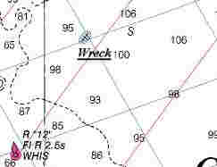

Link Index
MWDC
Home Page
Shipwrecks Page
Albert Galatin
Alice M. Colburn
Alice M. Lawrence
Ardandhu
Barge and Crane
California
Charles S. Haight
Chelsea
Chester Poling
City of Salisbury
Corvan
Dixie Sword
Edward Rich
French Van Gilder
Henry Endicott
Herbert
Herman Winter
Hilda Garston
HMCS St. Francis
James Longstreet
John Dwight
Kershaw
Kiowa
Lackawanna
Lunet
Mars
Pemberton
Pendleton
Pinthis
Port Hunter
Pottstown
Romance
Seaconnet
Trojan
USS Grouse
USS New Hampshire
USS Triana
USS Yankee
USS YSD
Vineyard Sound
Lightship
|
Description: Tug; Iron
Dimensions: length - 117 ft. 3 in. width - 23 ft. depth - 15 ft. 4 in.
Tonnage: gross - 278 other -
Propulsion: Steam; Propeller
Machinery: 750 Indicated Horse Power, 2 Cylinder Compound Steam Engine with cylinder diameters of 22 inches, 40 inches and a stroke of 28 inches; 1 Single ended Scotch Boiler, Coal fired.
Cargo:
The Shipwreck
Date Sunk: September 13, 1942.
Cause: Collision.
Location: Plymouth, east of Manomet Point.
Coordinates: Latitude, 41o - 56' - 16"N Longitude,70o - 29' - 33"W
Loran: 13956.8 and 44093.5
Shipwrecks of the Second World War are very difficult to write about. More often than not their sinking was censored from local press coverage to avoid alarming the general public of possible enemy action so close to home.
The Mars sank in collision with the coastal tanker Bidwell. The tanker sheared off the tug's bow and she quickly went down in 120 feet of water.
Back to Top
Dive Site Conditions
Depth in feet: maximum - 125; minimum - 95
Visibility in feet: average -
Except for the top of the wheelhouse, the tug lies upright and intact on a hard clay bottom. The pilothouse can be found on the bottom to starboard of the wreck.
Click on the image to go to the MapTech Map Server,
for additional navigation information.

Back to Top
Historical Background
Constructed: year - 1890; where - Camden, New Jersey
builder - J.H. Dialogue & Sons
Construction details: 1 Deck
Crew: ; Master:
Owners: Martin Marine Transportation Co., Philadelphia, Pennsylvania
Home or Hailing Port: Wilmington, Delaware
Former Name(s) and date(s):
Official number: 92153 Country: U.S.A.
Other Comments: Built to haul coal laden barges the vessel was sold to a Philadelphia Company in 1920 and then again in 1936 to a Wilmington, Delaware, Company.
Back to Top
Salvage
Back to Top
Sources:
Encyclopedia of American Shipwrecks; Berman, 1972
Historical maritime Group of New England; September 1, 1989
MapTech Mapserver
Non-Submarine Contacts; H.O.Pub.120 Vol.II, 1968
The Fisherman, magazine; August 17, 1989 / April 25, 1991
The Record, "American Lloyds", American Bureau of Shipping; 1943
WestWind Explorer; MetroWest Dive Club, October/1990, August/1991
Wrecks Below; Luther, 1958
Back to Top
These files are under construction. Any information, specifically dive site related, would be greatfully appreciated.
Send comments to: Chris Hugo
Copyright © 2000 by Christopher C. Hugo
Massachusetts Board of Underwater Archaeological Resources
All Rights Reserved
|